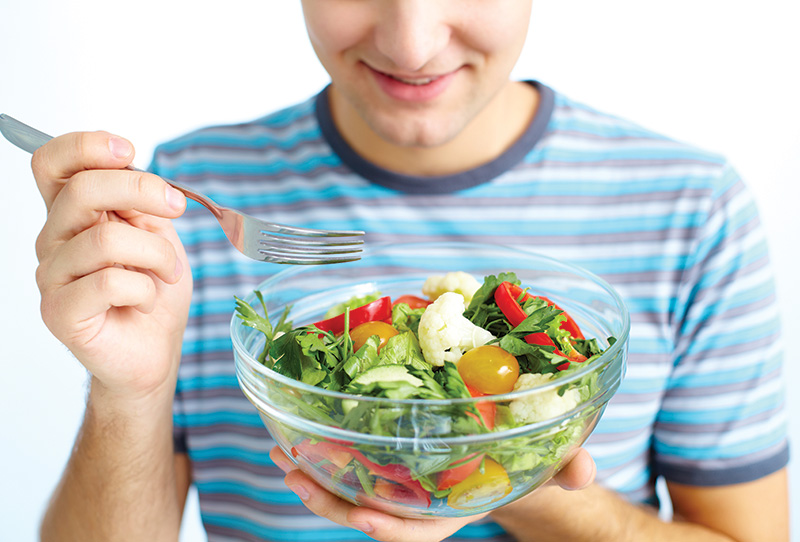
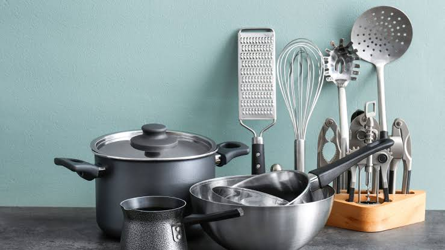
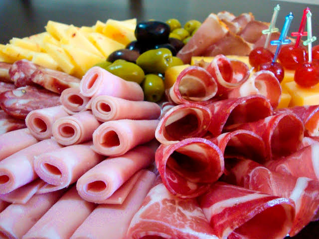
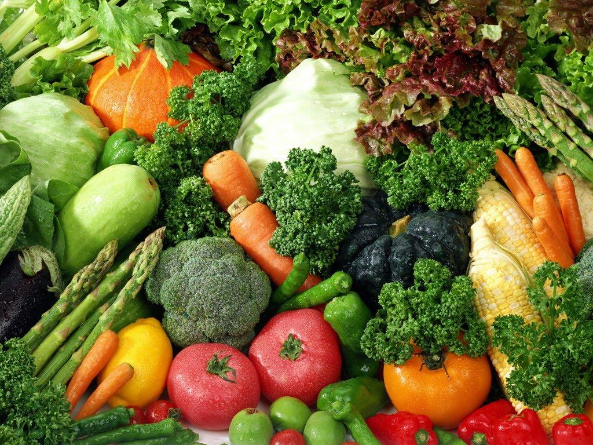

¿Qué es?
Es una infección causada por la bacteria Listeria monocytogenes.
Conocé qué es la listeriosis, cómo puede contaminar los alimentos y qué podemos hacer para prevenirla.
DESCUBRIR MÁS →Entender cómo actúa la bacteria es el primer paso para reducir los riesgos.
Es una infección causada por la bacteria Listeria monocytogenes.

Principalmente mediante el consumo de alimentos contaminados.

En materias primas, instalaciones, utensilios y alimentos listos para consumir.
La contaminación puede ocurrir durante la producción, elaboración, conservación o manipulación.
Especialmente los elaborados con leche no pasteurizada.

Alimentos refrigerados listos para consumir que requieren manipulación y conservación adecuadas.

Productos que deben lavarse y manipularse correctamente para evitar contaminaciones.
Importante: la refrigeración no elimina la bacteria. La Listeria puede multiplicarse incluso a temperaturas de heladera.
La enfermedad puede ser más grave en personas embarazadas, recién nacidos, adultos mayores y personas con el sistema inmunitario debilitado.
La prevención en la manipulación y elección de alimentos es especialmente importante para proteger a los grupos más vulnerables.
Acciones que ayudan a mantener los alimentos seguros. y prevenir contaminacion
Lavarse correctamente las manos antes de manipular alimentos.
Evitar el contacto entre alimentos crudos y cocidos o listos para consumir.
Respetar las temperaturas de conservación y cocinar adecuadamente los alimentos.
Mantener utensilios, superficies y equipos limpios y desinfectados.
Respondé estas preguntas y comprobá cuánto aprendiste sobre la prevención.